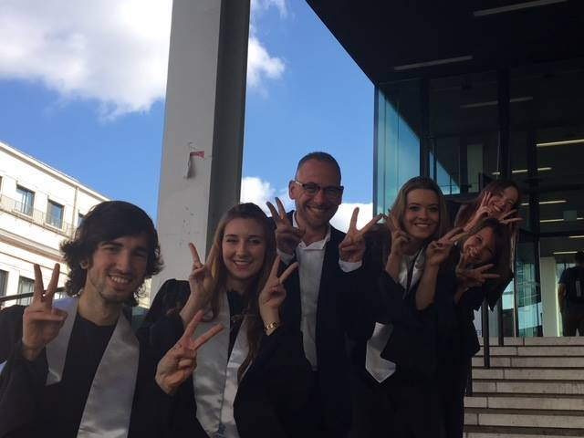

Na mijn middelbare studies besloot ik om de universitaire opleiding Oosterse talen en culturen (traject Japan) te volgen aan de UGent. Dit was een gevolg van mijn fascinatie met Japan indertijd. Zo verslond ik als middelbare student de ene anime na de andere, en leerde ik Japans aan de PCVO Moderne Talen in Hasselt. Ondanks mijn passie voor Japan, was dit geen evidente keuze, aangezien ik was afgestudeerd aan de beroepsrichting Kantoor. Bijgevolg hadden de leerkrachten van mijn middelbare school mij al gewaarschuwd dat dit ontzettend zwaar ging zijn voor mij. En dit was het ook. Ik heb van begin tot eind keihard moeten blokken, en mijn masterproef was een echte hinderpaal. Niettemin heb ik de opleiding toch succesvol af kunnen ronden (ik behaalde mijn bachelordiploma met een grote onderscheiding en mijn masterdiploma met een onderscheiding). Echter, omdat Japan mij niet meer genoeg interesseerde (tenminste, niet genoeg om er mijn leven aan te wijden), besloot ik uiteindelijk toch om een andere richting uit te varen. Niettemin heb ik geen spijt gehad van mijn studiekeuze. Ik heb tijdens deze periode belangrijke kennis opgedaan en prachtige ervaringen beleefd. Zo heb ik de kans gekregen om een aantal maanden in Japan te verblijven (in de prefectuur Fukuoka om precies te zijn).
